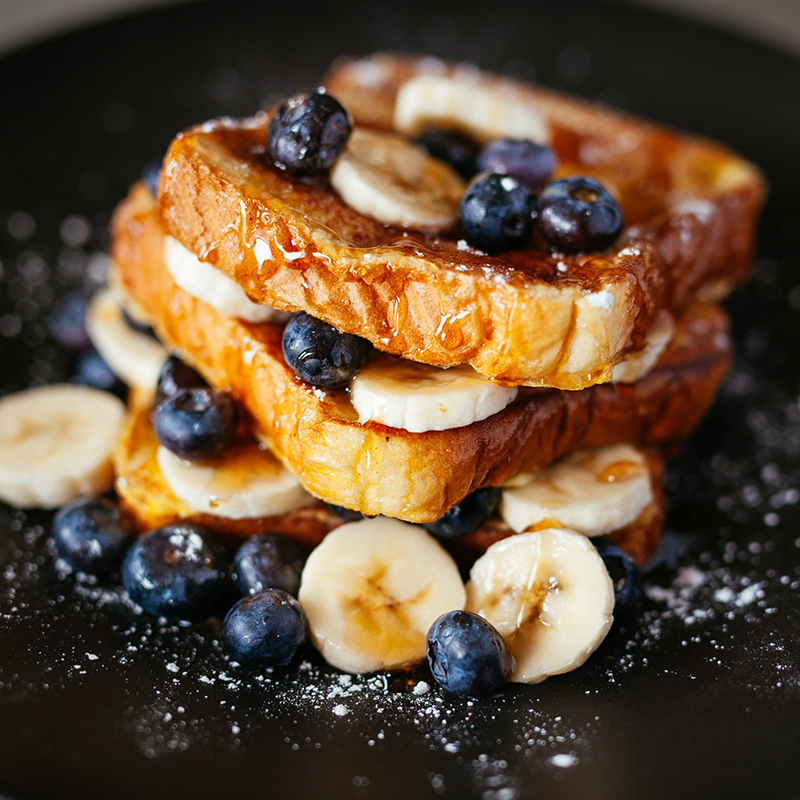
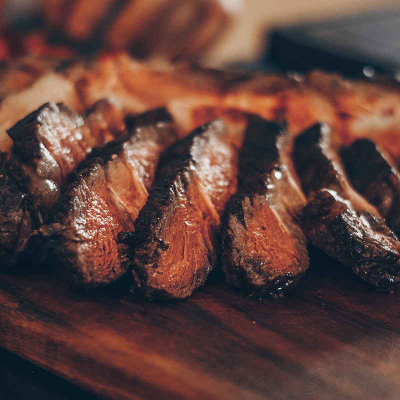
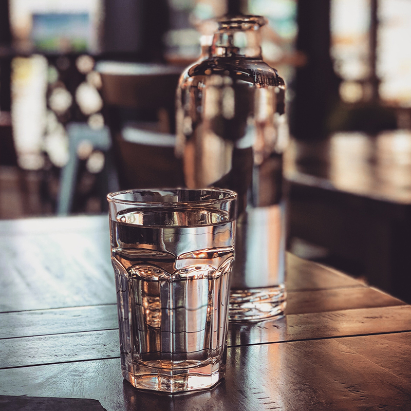

Nutrition doesn't only matter when it's time to make weight. This page will help you understand the basics of nutrition so that you can not only understand what's going on in your weight cut, but also how to fuel your body to get the most out of your training year-round.
First, let's divide nutrients into two categories: macronutrients and micronutrients.
Macronutrients are nutrients from which your body derives chemical energy, measured in kilocalories (commonly known simply as calories). Macros give your body fuel, and contribute to your daily calorie total.
Micronutrients are not used as fuel, but provide your body with elements that it needs in order to function. These are vitamins and minerals.
We won't explore in-depth how micronutrients pertain to general nutrition, which is not at all to say they're not important. Suffice it to say that you should consume a large variety of foods, including fruits and vegetables of all different colors. Your proteins, fats, and carbs should all come from a variety of sources. Eating chicken and rice every day will provide protein and carbs just fine, but you will eventually find yourself lacking in micronutrients due to a lack of diversity. If you are deficient in any certain micronutrient, it can cause problems. For example, being low in Vitamin D or Calcium can affect your ability to stop eating, and being low in magnesium can hinder insulin sensitivity.
Let's dive into the macronutirents:
Carbohydrates
Carbohydrates are the body's preferred fuel source. Given the choice, the body wants carbs because of how quickly they can be used. Carbohydrates are also the body's main fuel source by a large margin when doing high-intensity exercise, like combat sports. Because of this, it makes sense that carbs will be important around your training sessions.
However, if glucose is in the bloodstream (glucose being the form of carbohydrate that circulates in the blood), and the body doesn't have an immediate use for it, those carbs will be stored either in the muscles as glycogen (good), or as body fat (bad). Also, if blood glucose levels are sufficient to meet the body's energy needs, the body will not use body fat as a fuel source. Because of this, it's important not only to control overall carbohydrate intake, but to understand how a carbohydrate's speed of breakdown and utilization in the body makes an impact.
Sugars: Simple Carbs
Simple carbohydrates, or sugars, are either a single carbohydrate molecule or a pair of these molecules. They break down more quickly than complex carbohydrates, which are just longer chains of three or more carbohydrate molecules. It's important to understand that all carbohydrates are eventually broken down into glucose in the body. What differs between types of carbohydrates is the rate at which glucose is absorbed, and how the body responds to the incoming carbohydrate.
The two main types of dietary sugar you should know about are glucose and fructose.
Glucose, as stated, is what all other carbohydrates are turned into by the body. You get some dietary glucose from milk (as part of lactose), and some from maltose (from fermenting of grains, and in molasses), but the largest source of dietary glucose is added sugars. Sucrose, which is just the technical name for table sugar, is 50% glucose and 50% fructose. You may also see dextrose listed on food labels, and this is just another name for glucose. Corn syrup is usually 100% glucose, and high-fructose corn syrup is again about 50% glucose and 50% fructose.
Glucose will cause the largest insulin response of all carbohydrates. This is important, because insulin is the body's signaller for storing carbs. This is great after hard training! You just depleted a lot of the body's glycogen stores (glycogen, again, is the way carbohydrates are stored in muscles for use during higher-intensity activity), and a strong insulin response will help the body enter a rest-and-repair state and replenish those energy stores.
In meals that don't come after a significant training session, we want to limit insulin response. Therefore, glucose intake should be avoided at meals that don't come after hard training.
Fructose comes mainly from fruit, but also from honey and root vegetables like carrots and beets. It doesn't cause a significant insulin response, and breaks down slower than other sugars, which makes it a great carbohydrate option for meals throughout the day. Fructose is only broken down by the liver, which has about a quarter of the carbohydrate storage capacity of muscles, so it's important not to over-consume fructose. This is why high-fructose corn syrup is such a problem. But as long as you stay away from sugary drinks, you should be fine (as long as you don't eat 12 bananas at a time).
Starches: Complex Carbs
Complex carbohydrates are longer chains of glucose molecules. Your body breaks them down into the exact same stuff you'd get if you ate spoonfulls of sugar. What makes complex carbohydrates different from sugars is the rate at which they break down. It takes longer to break down these long chains of glucose, so you get a lesser insulin response, and more sustained energy. When you consume complex carbs from whole grains, you also get fiber, which is a major player in insulin response, satiety (feeling full), digestion, and other important things.
Complex carbohydrates are another good option as a carb source for regular meals throughout the day (non-training-adjacent meals), but be careful! Some starches, like white rice and potatoes, can still cause a whopping insulin response, not much better than pure sugar. But again, insulin response isn't all bad. If you're trying to get a meal that will help you recover after a hard training session, go for the rice and taters.
Fiber
Fiber is a very important player in limiting glycemic response (how much insulin is produced in response to carbohydrate intake, and how quickly glucose enters the bloodstream). You get fiber from whole grains and vegetables. Soluble fiber helps feed healthy gut bacteria, helps you feel fuller after eating, and actually lowers the net total of calories that enters the bloodstream after a meal. Insoluble fiber also helps you feel fuller, and aids in digestion.
You should try to get a significant source of fiber at all regular non-training-adjacent meals, especially if the goal is weight loss.
Summary
- Carbs are the body's preferred fuel source, but use them wisely.
- Glucose/dextrose, what you typically think of as "sugar", should only be consumed directly after a hard training session.
- Fructose, from fruits, is a slower digesting sugar, and is a good carb option for meals through the day
- Complex carbohydrates are also good for meals through the day, and should come from whole grains, which provide greater amounts of fiber, vitamins, and minerals.
- Fiber is an important regulator of blood sugar and insulin response, and helps with digestion and gut health. Try to get fiber at every meal that's not right before/after training.
Fats

Fats are a necessary nutrient group, meaning you shouldn't cut them out. What's more, they're generally the body's primary fuel source, especially when you're operating at a low intensity level.
Let me clarify this; carbohydrates are the body's preferred fuel source because they're quick and easy to use, while fats are the body's primary fuel source, because they provide 9 calories per gram compared to 4 calories per gram from carbs, and fats can be used very efficiently as a long-term fuel source for steady, low intensity activity.
If you're trying to lose or maintain bodyweight, fats should be an important fuel source at regular meals through the day, becuase they provide sustained energy without insulin release and subsequent peaks and valleys in how energetic you feel. If you're trying to gain muscle, or you train at a high intensity very frequently, you'll want higher carbs (and still consume fats too).
There's a lot of controversy and confusion right now about the role of saturated vs unsaturated fats in the diet. What's not controversial is that Omega-3 fatty acids are good, and people usually get too many Omega-6's comparatively, so if you want to structure your fat intake around trying to get Omega-3's, which is generally agreed to be a good idea, you can focus on the following foods:
- Salmon
- Sardines
- Oysters
- Chia Seeds
- Hemp Seeds
- Flax Seeds
- Macadamia Nuts
- Walnuts
- Avocados
- Eggs from Pastured Hens
- Grass Fed Beef
Some of these sources are from plants, some from animals. Some come along with a high amount of saturated fat, some not. The choice is yours on which to choose based on your dietary preferences.
One last note: only the seafood options above contain the Omega-3's EPA and DHA, which are really beneficial in many ways, so try to get some seafood (there are many good seafood options I didn't list).
Summary
- Fats fuel the body at low-intensity (through the day)
- Fats are more calorically dense than carbs and protein (9 calories per gram from fats vs 4 calories per gram from carbs and protein.
- Fats provide a sustained energy source, cause no insulin response, and cause no peaks and valleys in energy levels.
- Try to eat fat sources rich in Omega-3 fatty acids.
Protein
Protein is important as a building block in the body. Protein is made up of amino acids, and these amino acids are used as structure in every cell of the body, not just muscle. Your body uses protein to build and repair tissues, as well as creating enzymes, hormones, and other chemicals. Protein is an important building block of bones, muscles, cartilage, skin, and blood.
There are 20 amino acids that your body needs, 9 of which are essential, meaning you need to get them from food, and your body can manufacture the rest on its own. Different foods will contain amino acids in varying amounts, and some plant protein sources don't contain all the essential amino acids. Again, this is an area of contention, with some people claiming that incomplete amino acid profiles don't matter, but in general, animal protein sources are preferable to plant sources because of protein utilization rate, nutrient content, and amino acid profile.
Another thing about protein that's hard to contest in light of a large body of supporting research is that it's highly beneficial for you, as an athlete, to consume a larger amount of protein than the average person. The consensus recommended amount is 1 gram of protein per pound bodyweight, so if you weigh 200lbs, that means 200 grams of protein. Again, you'll see this contested, but it's really hard to make a substantial argument against this. You can visit the "resources" section of this site to see my go-to resources for viewing studies on this kind of thing.
Protein serves not only as building material for the body, but also as a hormonal signaller. When you consume protein, it causes you to be in an anabolic state, or a state of muscle protein synthesis. Muscle protein breakdown (MPB) exceeds muscle protein synthesis (MPS) in a fasted state, and MPS exceeds MPB in a fed state. What this means is that consuming protein regularly, and in sufficient amount, is important for recovery from intense training.it increases secretion of satiety hormones (GIP, GLP-1), and reduces secretion of the "hunger" hormone ghrelin more so than the other macronutrients. This means protein makes you feel more full than fats or carbs comparatively. This is part of what makes high-protein diets attractive for weight loss.
Another important role of protein as a hormonal signaller is that it increases secretion of satiety hormones (GIP, GLP-1), and reduces secretion of the "hunger" hormone ghrelin more so than the other macronutrients. This means protein makes you feel more full than fats or carbs comparatively. This is part of what makes high-protein diets attractive for weight loss.
Summary
- Protein provides building blocks for muscle and many other structures in the body.
- Eating a significant amount of protein causes the body to enter a muscle-repair state.
- Protein makes you feel more full compared to fats and carbs.
- Athletes need more protein, try to get 1 gram of protein per day for every pound you weigh.
- Eating protein consistently through the day, at each meal, will help with both weight loss and muscle gain.
- Protein from animal sources is generally better quality, and is used more effectively by the body.
Hydration
You probably already know that hydration is an important factor in health, weight loss, and athletic performance. A loss of sweat equal to 2% of body weight causes a significant decrease in physical and mental performance. This 2% of bodyweight dehydration increases rate of glycogen breakdown, leading to greater muscle fatigue and increased lactic acid accumulation. It decreases blood volume and cardiac output, limiting how well your body can deliver and use oxygen. Dehydration from training causes increased levels of cortisol, which competes for uptake with testosterone, and reduces the amount of testosterone released in response to weight training. Losses of 5% or more of body weight during physical activities may decrease the capacity for work by roughly 30%.
The question always remains of exactly how much to drink. Everybody sweats and loses sodium, which is an important regulator in hydration (much more on this in the water cut section), at different rates. Maybe the solution is a prescription hydration plan. In a 2018 study, athletes were measured for their specific water loss over the course of a training session, and prescribed a hydration plan accordingly. Participants following a prescription hydration plan jumped 4.53 ± 3.80 in. farther, tracked moving objects 0.36 ± 0.60 m/second faster, and exhibited a faster heart rate recovery following a moderate to hard training session of 45–120 min in duration.
Most of us don't have the means to acquire a prescription hydration plan, however. You could go with the old-school method of a gallon of water per day, but this is a pretty loose recommendation to give to both a 140lb and a 280lb athlete.
So here we go: 0.75oz of water per pound of bodyweight is your baseline water intake. So if you weight 200lbs, on a day when you didn't do any training, you'd shoot for 150oz of water.
Now let's factor in training; you should drink 16oz of water 2-3 hours before training, and 8oz 15 minutes before training, and this can come from your daily total that we calculated previously. In addition to this daily total, you should drink 4-6oz of water every 15-20 minutes of training. So if you're a big guy, and you train for an hour and a half, you should consume about 26oz of water total at regular intervals during training. Afterwards, you should consume 16-20oz of water for every pound of bodyweight you lost during training. So if you weigh 2lbs less after training than you did at the beginning, that's another 32-40oz of water you should drink, separate from your baseline intake.
So all together, if you weigh 200lbs, train for 1.5 hours in a day, and lose 2lbs during that training, you should consume about 210oz of water that day.
Summary
- Nobody cares that you don't like water. Drink it anyway.
- Even a small degree of dehydration has great negative effects on athletic performance.
- Drink 0.75oz of water per pound of bodyweight per day as a baseline amount.
- Drink an additional 4-6oz of water every 15-20 minutes during training.
- After training, drink an additional 16-20oz of water for every pound of bodyweight you lost during training.
Post-Workout
Here is an exerpt from the abstract of a 2012 study on post-workout nutrition that sums up the entire subject very well:
"Researchers have tested the effects of timing of protein supplement ingestion on various physical changes in weightlifters. In general, protein supplementation pre- and post-workout increases physical performance, training session recovery, lean body mass, muscle hypertrophy, and strength. Specific gains, differ however based on protein type and amounts. Studies on timing of consumption of milk have indicated that fat-free milk post-workout was effective in promoting increases in lean body mass, strength, muscle hypertrophy and decreases in body fat. The leucine content of a protein source has an impact on protein synthesis, and affects muscle hypertrophy. Consumption of 3–4 g of leucine is needed to promote maximum protein synthesis. An ideal supplement following resistance exercise should contain whey protein that provides at least 3 g of leucine per serving. A combination of a fast-acting carbohydrate source such as maltodextrin or glucose should be consumed with the protein source, as leucine cannot modulate protein synthesis as effectively without the presence of insulin. Such a supplement post-workout would be most effective in increasing muscle protein synthesis, resulting in greater muscle hypertrophy and strength. In contrast, the consumption of essential amino acids and dextrose appears to be most effective at evoking protein synthesis prior to rather than following resistance exercise."
What this says is that you need protein both before and after training to recover maximally, and post-workout protein should be accompanied by sugars. This is because protein puts the body in an anabolic, muscle-repair state, and sugars cause an insulin response that will help the body replenish energy stores as well as contributing to the rest-and-repair state of the body.
Leucine, mentioned above, is an essential branched chain amino acid, and is the most important one when it comes to initiating muscle repair. You can get leucine in supplement form, but it's present in any complete protein source. Whey protein, which is the recommended protein source post-workout, is 10% leucine, so for maximum recovery, you should either get at least 30g whey protein post-workout, or supplement leucine separately. Separate supplementation of leucine may be a good idea if you're trying to limit calories as much as possible and you don't want the extra protein.
Below is a calculator to help you determine exactly how much you should consume post-workout. I recommend getting the protein from a whey protein supplement, or a whey protein plus BCAAs/pure leucine in the case described above, where you need the 3g minimum leucine dose, but want to limit calories as much as possible. The carbohydrates should come from either a dextrose supplement or powdered gatorade (or equivalent product). Gatorade powder contains mostly dextrose, plus some sucrose (containing fructose), as well as sodium. It's a great option to help you utilize as many glucose transport pathways in the body as possible, which will replenish glycogen as fast as possible.
The glycogen synthase enzyme released during glycogen depletion has a short half-life effective for 90-120 minutes, but most effectively available at 30 minutes post exercise, so try to consume these nutrients in liquid form quickly after training.
Post-Workout Nutrition
This calculator calculates your lean body mass, and uses the result to calculate how much glycogen was used up during training, based on intensity and duration. The resulting numbers are what would be required to completely replenish energy stores and kickstart muscle repair as effectively as possible.
Summary
- Consume protein and sugar in liquid form 30 minutes after training for optimal recovery.
- Your body needs significantly more carbs than protein after hard training.
- Get at least 3 grams of the amino acid Leucine after training (equivalent to 30g whey protein, or supplement Leucine/BCAAs separately).
- Use the calculator to find out how much glycogen (stored carbohydrates) you use up based on lean body mass, training intensity, and training duration.
- Consume a whole-food meal 1.5 hours after your post-workout shake.